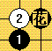
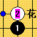

㈠用它把子落月影棋谱库转化：先在子落月影中输出代码，然后在南通打谱软件中分段拷贝代码/输入RENJU2002代码/保存/合并/在保存，可惜没有注释标记。
㈡用把保存分支：有时候需要共享棋谱，但是不能全谱，要有点保留，不停的Del掉保留的分支，当然有钱的话，就买完整版了。
㈢做棋子标记：
棋子标记：落子后适合初学，没有先给答案
传统标记：落子前
实现方法：也是Ctrl+棋子或打点
好了~~就到这里，欢迎大家来我的QQ空间，下次继续
http://user.qzone.qq.com/12126430